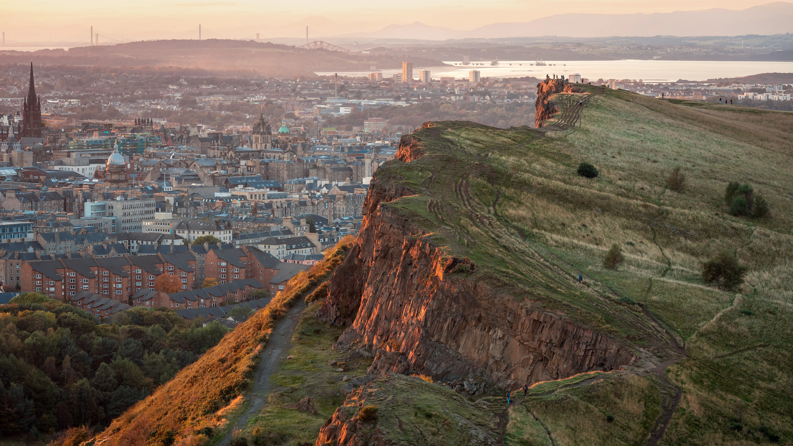

|
 |
 |
 |
 |
|
Welcome to our Gallery of Wonders! Explore six continents, each with a brief glimpse into its unique charm. Click " Learn More " to delve deeper into the continent of your choice, discovering four of the most beautiful places of the continent. Let the world's diversity unfold with every click. Happy exploring!
Asia, the world's largest and most diverse continent, is a breathtaking tapestry of natural beauty, vibrant cultures, and rich history. It occupies the eastern four-fifths of the giant Eurasian landmass.
Asia is known for its stunning landscapes that range from the snow-capped peaks of the Himalayas to the lush, tropical rainforests of Southeast Asia. It has both the highest and the lowest points on the surface of Earth, and has the longest coastline of any continent. The continent is subject overall to the world's widest climatic extremes.
The continent is rich in natural resources, such as petroleum, forests, fish, water, rice, copper, and silver. Manufacturing in Asia has traditionally been strongest in East and Southeast Asia, particularly in China, Taiwan, South Korea, Japan, India, the Philippines, and Singapore.
Asia is also home to a myriad of different cultures and civilizations, each with their own unique traditions and customs. Its 4.7 billion people constitute roughly 60% of the world's population.
From the bustling markets of Bangkok to the serene temples of Kyoto, from the Great Wall of China to the beautiful beaches of Bali, Asia's beauty lies in its diversity and its people. Each corner of this vast continent offers a different flavor, a different experience, and a different perspective on life. It's a place where ancient traditions coexist with modern life, creating a vibrant and dynamic mix that is uniquely Asian.
So, whether you're trekking through the jungles of Borneo, exploring the historic sites of India, or enjoying the culinary delights of street food in Vietnam, Asia offers an unparalleled adventure that is as diverse as the continent itself. It's a place that captures the imagination and the heart, and once visited, is never forgotten.
Here are four stunning destinations in Asia that you'll definitely want to explore.

South America, a continent renowned for its natural marvels, vibrant cultures, and captivating history, stands as a realm of breathtaking beauty.
From the snow-capped peaks of the Andes, the world's longest mountain range, to the expanses of the Amazon Rainforest, Earth's largest rainforest, South America's varied landscapes are truly awe-inspiring. The continent also boasts the stunning Iguazu Falls, the vast Pantanal wetlands, and the surreal terrains of the Atacama Desert, the driest place on the planet.
South America's cultural mosaic mirrors its geographical diversity, blending indigenous traditions, colonial influences, and modern vibrancy. Recognized for its musical and dance expressions, such as the passionate Tango of Argentina, the lively Samba of Brazil, and the rhythmic Cumbia of Colombia.
Steeped in history, South America boasts ancient sites like the Inca city of Machu Picchu in Peru and the historic quarter of Valparaiso in Chile. The continent's history weaves together indigenous cultures, European colonization, and the struggle for independence.
In terms of biodiversity, South America is a treasure trove. The Amazon Rainforest, housing an estimated 400 billion individual trees representing 16,000 species, is a prime example. The Galapagos Islands, situated off the coast of Ecuador, are renowned for their unique wildlife, inspiring Charles Darwin's theory of evolution.
In conclusion, South America's allure lies in its diverse landscapes, vibrant cultures, historical significance, and remarkable biodiversity—a continent that undeniably offers something for everyone.
Here are four stunning destinations in South America that you'll definitely want to explore.

Europe, a continent characterized by immense diversity and allure, is a tapestry woven with varied landscapes, cultures, and histories. Its allure extends beyond picturesque landscapes to encompass a profound cultural heritage and dynamic urban centers.
Within Europe lie some of the world's most awe-inspiring natural wonders. From the rugged cliffs along Ireland's Wild Atlantic Way to the sun-drenched beaches of the Mediterranean, the icy fjords of Norway to the vine-covered hills of France, each locale presents a distinctive and breathtaking panorama. Examples include the Swiss Alps, the Scottish Highlands, the azure waters of the Greek Isles, and the volcanic terrains of Iceland.
Europe's cities stand as testaments to its rich history and architectural splendor. The Colosseum in Rome, the Eiffel Tower in Paris, the Acropolis in Athens, and the Tower of London stand as iconic landmarks. Meanwhile, the quaint streets of Prague, the canals of Venice, the architecturally inspired structures in Barcelona, and the historical walls of Dubrovnik collectively contribute to Europe's architectural charisma.
The beauty of Europe also resides in its diverse cultural tapestry. Each country, region, and city boasts its own unique culture, traditions, and festivals. Whether it's the flamenco dancers in Spain, the bagpipers in Scotland, the cheese artisans in France, or the glass craftsmen in Italy, each element adds vibrancy to the rich fabric of European culture.
Europe is the birthplace of numerous world-renowned artists and writers. Museums in Paris, London, Amsterdam, and Madrid house some of the most famous artworks globally. The literary contributions of Shakespeare, Dostoevsky, Cervantes, and Kafka are integral to the global literary legacy.
In essence, Europe's allure stems from a harmonious blend of natural marvels, architectural wonders, cultural diversity, and a storied history of art and literature. It remains a continent that has captivated poets, artists, and dreamers for centuries and continues to do so today. Whether exploring a vibrant city, unwinding on a serene beach, trekking in majestic mountain ranges, or immersing oneself in local traditions, Europe provides endless opportunities for exploration and enchantment.
Here are four stunning destinations in Europe that you'll definitely want to explore.


North America, an expansive continent extending from the Arctic Circle to the Tropics, showcases a remarkable array of natural wonders and diversity.
Commencing in the northern reaches, the landscape is characterized by the icy tundra and awe-inspiring fjords of Canada and Alaska. This area boasts a diverse array of wildlife, including polar bears, wolves, and the majestic bald eagle. The Northern Lights, or Aurora Borealis, add to the allure with a captivating display of colors illuminating the sky.
Heading southward, the scenery transforms into the lush and vast forests of the Pacific Northwest and the grandeur of the Rocky Mountains, stretching from Canada to the southwestern United States. These locales attract outdoor enthusiasts with opportunities for hiking, skiing, and mountain climbing.
Continuing further south, the landscape transitions to the captivating beauty of the American Southwest, featuring distinct red rock formations and expansive desert vistas. This region is steeped in Native American history and culture.
On the Eastern seaboard, a blend of charming colonial towns, bustling cities, and picturesque coastlines awaits. The Great Smoky Mountains provide a striking backdrop to the vibrant autumn hues for which this region is renowned.
In Central America, tropical rainforests teem with biodiversity, ancient Mayan ruins narrate stories of times long past, and stunning beaches grace the shores of the Caribbean Sea and the Pacific Ocean.
From the sun-drenched beaches of California and Florida to the vast plains of the Midwest, and the rich cultures of Mexico and Central America, North America's beauty mirrors the diversity of its terrain. Each region, possessing its own distinct charm and natural splendor, contributes to the extraordinary tapestry that defines North America. It is a continent that truly caters to a wide range of interests and preferences.
Here are four stunning destinations in Europe that you'll definitely want to explore.

Africa, the world's second-largest and second-most populous continent, is renowned for its extraordinary beauty and diversity. Encompassing approximately one-fifth of Earth's land area and 6% of its total surface, it is home to a population of 1.4 billion people as of 2021, constituting about 18% of the global human population.
The continent comprises 54 fully recognized sovereign states, each boasting distinct cultures, languages, and histories. Africa's landscapes showcase remarkable diversity, ranging from the expansive Sahara Desert and fertile Serengeti plains to the tropical rainforests of the Congo and the picturesque beaches of Seychelles.
Beyond its landscapes, Africa boasts abundant wildlife, including iconic species such as lions, elephants, and rhinos. National parks and reserves like Kenya's Maasai Mara and South Africa's Kruger National Park provide unparalleled opportunities for wildlife viewing.
In addition to its natural wonders, Africa possesses a rich cultural heritage. From the ancient pyramids of Egypt and Ethiopia's rock-hewn churches to the lively markets of Marrakech and the vibrant city life of Lagos, the continent offers a plethora of captivating experiences.
Africa's allure extends beyond its landscapes and wildlife to its people, characterized by resilience, creativity, and spirit. Despite challenges, Africa's recent economic expansion and its large, youthful population position it as a significant economic market on the global stage.
Whether exploring ancient ruins, embarking on a safari, or immersing oneself in local cultures, Africa provides a wealth of experiences that enchant all who visit.
Here are four stunning destinations in Africa that you'll definitely want to explore.
The landmass of Australia, also referred to in technical terms as Sahul, Australia-New Guinea, Australinea, or Meganesia, stands out as a distinctive and picturesque region. Situated in the Southern and Eastern hemispheres, it is the smallest among the seven traditional continents.
Encompassing mainland Australia, Tasmania, the island of New Guinea (Papua New Guinea and Western New Guinea), the Aru Islands, the Ashmore and Cartier Islands, most of the Coral Sea Islands, and other nearby islands, the continent exhibits diverse geography, culture, and history
Australia presents a tapestry of contrasts, ranging from arid deserts in the center to lush tropical rainforests in the north-east, and mountain ranges in the south-east. The landscape variety and climate differences make it an ideal haven for nature enthusiasts
The allure of Australia extends beyond its picturesque landscapes to its abundant biodiversity. As a megadiverse country, it hosts a plethora of unique flora and fauna, including numerous endemic species found nowhere else in the world.
Africa's allure extends beyond its landscapes and wildlife to its people, characterized by resilience, creativity, and spirit. Despite challenges, Africa's recent economic expansion and its large, youthful population position it as a significant economic market on the global stage.
The cities of Australia, including Sydney, Melbourne, Brisbane, Perth, and Adelaide, exude vibrancy and cosmopolitan charm, boasting modern architecture, cultural festivals, and top-notch dining. In contrast, rural areas provide a glimpse into traditional lifestyles and ancient cultures.
Australia serves as a testament to the planet's beauty and diversity, with its unique landscapes, rich biodiversity, and lively cities making it an exceptionally special place.
Here are four stunning destinations in Australia that you'll definitely want to explore.